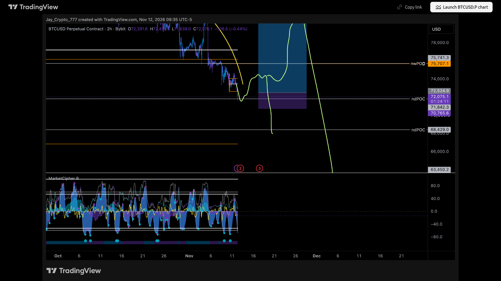

Trades VIP do Cobra. Categoria VIP-trades igual a ontem: 🟢spy-macro-short, 🔴btc-hedge-short, 🟠sol-long, 🟢kas-long, 🟢avve-long, 🟠eth-macro-long, 🟠near. Único post de trade desde ontem 12h: sol-long 07h19 (gráfico 1W, sem caixa de níveis). vip-cobra-updates 07h30: só aviso dos canais bitcoin-vip/ethereum-vip. Adaśko-updates 10h37: resumo diário (Fear&Greed 26–29, ETF −95 mi), sem trade.
HOJE 19h (12/11): sem post novo; NEAR ≈3,404 (mín. 3,422 às 08h, ainda acima da entrada 3,265); não acionou. Range deviation: não relido no Central Command nesta rodada (sem trade novo com entrada); pela análise intradiária das 15h, todos os ativos seguem abaixo da fita de EMAs no 1h/4h, sem cruzamento de alta. | HOJE 12h (11/11): Sem post novo (último 10/11 07h00). NEAR ≈3,712 (mín. 3,471 em 24h), entrada ≈12% abaixo, não acionou. Alerta 3,265 já existe. Range deviation ~12h15 (CC): 1h VERMELHO ativo, preço no topo de uma fita comprimida (esticado para cima no curto prazo); 4h neutro (último AZUL há ~3 velas), vela verde grande subindo para dentro da fita, sem cruzar para cima — misto; a entrada do plano (≈3,265) está bem abaixo. | NOVO: “depois de esperar mais de 2 meses, finalmente vejo um setup decente… vou colocar alertas logo acima do 0,31 (Fibo ≈3,263 no semanal). Se gostar do que vir nesse nível, entro long.” Níveis lidos da caixa do gráfico 1W (≈): entrada ≈3,265 (caixa ≈3,247), stop ≈3,049, alvo ≈9,147 (RR ≈27). É um plano condicionado, ainda sem ordem. NEAR ≈3,708, entrada ≈12% abaixo. Range deviation ~12h20 (CC): 1h VERMELHO (uma barra, vela atual), preço acima da fita; 4h AZUL ativo, preço na borda de baixo da fita, cruzamento incerto — misto; a entrada do plano é bem mais abaixo (≈3,265). Pelas regras do relatório, o ideal é esperar divergência de alta confirmada do MC B no 4h/12h/1D perto de 3,26. Alerta criado no TradingView.
HOJE 19h (12/11): sem post novo; ETH ≈2.016 (mín. 1.983,8 hoje, ainda acima da entrada 1.936,66); não acionou. Range deviation: não relido no Central Command nesta rodada (sem trade novo com entrada); pela análise intradiária das 15h, todos os ativos seguem abaixo da fita de EMAs no 1h/4h, sem cruzamento de alta. | HOJE 12h (11/11): Sem post novo (último 10/11 11h47). ETH ≈2.055 (mín. 2.006 em 24h), entrada ≈6% abaixo, não acionou. Alerta 1.936,66 já existe. Range deviation ~12h15 (CC): 1h neutro (último AZUL há ~17 velas), na borda de baixo da fita, sem cruzar; 4h AZUL ativo, abaixo da fita, sem cruzar — apoia procurar long mais abaixo; gatilho ainda não veio. | HOJE 12h (10/11): 11h47 “Patience for ETH” com gráfico 1W novo: caixa de long ≈1.938,69 / SL 1.820,44 / alvo ≈2.982,31 (o gráfico ainda marca 1.936,66 e 2.893,23 e uma zona verde “Absolute lowest support for ETH”). Mantidos os níveis originais (diferença pequena; alerta de 1.936,66 já existe). ETH ≈2.085,8 (mín. 2.028 desde ontem 19h), entrada ≈7% abaixo, não acionou. Range deviation ~12h20 (CC): 1h AZUL ativo e 4h AZUL ativo, preço abaixo da fita nos dois, sem cruzar — apoia procurar long mais abaixo; gatilho ainda não veio. | NOVO: Cobra postou "Big ETH trade cooking" às 11h33 e o gráfico com a ordem às 12h06 ("Loading ⏳"). Níveis lidos da caixa do gráfico (≈): entrada 1.936,66, stop 1.820,44, alvo 2.893,23 (RR ≈8,2). Preço atual ≈2.127,6, a entrada está ≈9% abaixo — limite longe, ainda não acionou. Range deviation (Central Command): 1h e 4h com a última zona AZUL (esticado para baixo, procurar long) e o preço ainda abaixo da fita de EMAs, sem cruzamento de confirmação. Zona apoia a ideia de long; o gatilho ainda não veio. Pelas regras do relatório, o ideal é esperar divergência de alta confirmada do Market Cipher B no 4h/12h/1D perto de 1.936 antes de confiar.
HOJE 19h (12/11): canal virou 🔴. 12h55 Cobra: “I took -0.5R on this one. Luckily I didnt risk full size.” AAVE fez mínima 110,76 hoje (abaixo do stop 114,6); agora ≈113,99. No placar a mecânica conta o stop; a coluna Autor mostra −0,5R. Range deviation: não relido no Central Command nesta rodada (sem trade novo com entrada); pela análise intradiária das 15h, todos os ativos seguem abaixo da fita de EMAs no 1h/4h, sem cruzamento de alta. | HOJE 12h (11/11): Sem post novo (último 09/11 11h02). AAVE ≈122,7 (mín. 120,83 em 24h), ≈6% abaixo da entrada; stop 114,6 intacto. Range deviation ~12h15 (CC): 1h AZUL ativo e 4h AZUL ativo, preço abaixo/na borda de baixo da fita, sem cruzar — esticado para baixo, apoia segurar o long; sem gatilho ainda. | HOJE 12h (10/11): Sem post novo (último 09/11 11h02). AAVE ≈125,7 (mín. 122,71 desde ontem 19h), ≈4% abaixo da entrada; stop 114,6 intacto. Range deviation ~12h20 (CC): 1h AZUL ativo, preço na borda de baixo da fita; 4h AZUL ativo (barra fina), na borda de baixo; sem cruzar — esticado para baixo, apoia segurar o long; sem gatilho ainda. | HOJE 12h (07/11): Sem post novo no canal. AAVE ~131,80 (128,66–132,63 desde ontem 19h), pouco acima da entrada; stop intacto. Range deviation ~12h27 (CC): 1h neutro (último AZUL há ~42 velas), ACIMA da fita, gatilho de alta confirmado; 4h neutro (último AZUL há ~10 velas), dentro da fita, sem gatilho — apoia o long (1h confirmado, 4h ainda não). | HOJE 12h (06/11): NOVO. 12h28 “Trade loading!” + gráfico semanal AAVE; 12h31 “entering my first AAVE long here”; ainda sem tamanho cheio; se fechar acima do 0,31 no fim de semana, adiciona. Níveis lidos do long-position tool no gráfico: entrada ≈130,66 / SL 114,60 / TP 249,78 (linha cinza 188 pode ser intermediária). AAVE ~131,39 (acima da entrada). RR até TP ≈7,4. Sem alerta (entrada a mercado). vip-cobra-updates 09h25: AAVE segura forte apesar da queda do BTC. Range deviation ~13h20 (CC): 1h neutro (último AZUL 05/11), gatilho fraco (preço cruzou acima da fita bem flat); 4h neutro (último AZUL 05/11), gatilho marginal (preço no topo da fita) — apoia LONG de forma fraca; contra short. Entrou no placar nesta rodada.
MUDOU desde o meio-dia: o canal ltc-long sumiu da categoria VIP-trades. Pela Binance o LTC fez mínima 49,26 em 08/11 por volta das 18h (abaixo do stop 50,2), então o stop foi batido. No #vip-chat um membro (não o Cobra) escreveu "Ltc stopped out" às 04h58 de hoje; o Cobra não postou confirmação.
HOJE 12h (11/11): Sem post novo (último 05/11 14h59). Range: n/d (tradfi). | HOJE 12h (10/11): Sem post novo (último 05/11 14h59). Range: n/d (tradfi). | HOJE 12h (07/11): Sem post novo no canal. Range: n/d. | HOJE 12h (06/11): Sem post novo. Último 05/11 14h58–14h59: ~70% da posição short; procura alvos e repiques para adicionar. Canal 🟢. Range: n/d (tradfi).
HOJE 12h (10/11): Canal removido da categoria (trade já encerrado). | HOJE 12h (06/11): 12h29 “SL hit breakeven! Good trade overall”. Antes: 05/11 11h32 TP 25%, 12h16 TP 30%, 12h19 SL na entrada. ≈55% realizado com lucro; resto saiu no BE. Canal agora 🔴. PEPE ~5.08e-06. Range deviation ~13h20 (CC): 1h neutro (último VERMELHO ~15h), preço acima da fita sem cruzamento para baixo; 4h neutro (último VERMELHO), sem gatilho — short residual já saiu; não aumentar short sem gatilho.
HOJE 12h (10/11): Canal 🔴btc-hedge-short (sem post novo). | HOJE 12h (06/11): 12h27 “fully out of BTC hedge short. Since we swept the lows”; “bottom is VERY close”. Não foi post de SL; saída voluntária depois de varrer as mínimas (BTC mín. ~74.888 desde 05/11 19h; 74k não bateu). Parcial 77.600 + BE no resto. Canal agora 🔴. BTC ~75,702. Sem níveis numéricos claros: segue fora do placar. Range deviation ~13h20 (CC): 1h neutro (último AZUL há ~2 velas), sem gatilho (abaixo da fita); 4h AZUL, sem gatilho — contra short fresco; long sem confirmação.
HOJE 12h (10/11): Canal removido da categoria (trade já encerrado). | HOJE 12h (06/11): 12h28 “My SL was hit.” Confirma o stop 2.220 (já batido na Binance 05/11 18h25, mín. 2.219). Canal agora 🔴. −1R. ETH ~2,227.61. Já estava no placar como Stop. Range deviation ~13h20 (CC): 1h neutro (último AZUL), sem gatilho; 4h AZUL, sem gatilho — contra short; long sem confirmação.
HOJE 12h (11/11): Sem post novo (último 10/11 11h44). KAS ≈0,02914 (Gate; mín. 0,02881 em 24h), +2,3% sobre a entrada; stop original 0,02655 intacto. Range deviation ~12h15 (CC): n/d (o ativo não existe no Central Command; a página volta para o BTC). | HOJE 12h (10/11): 11h44 “KAS holding strong despite BTC going down” com gráfico 1D: caixa entrada 0,028487 / stop ≈0,026796 / alvo ≈0,036093 (o post de 09/11 dizia SL na entrada e TP1 0,0352; o placar mantém os níveis originais). KAS ≈0,03071 (KuCoin), +7,8% acima da entrada. Range deviation ~12h20 (CC): 1h VERMELHO ativo (esticado para cima), preço acima da fita, sem cruzar para baixo — sinal para realizar parte do long, não aumentar; 4h último AZUL há ~6–7 velas, preço na parte de cima da fita, cruzamento para cima parcial/incerto — 4h ainda apoia o long. | MUDOU desde o meio-dia: Cobra postou "KAS filled" hoje 06h56 e "Moving SL to entry" às 11h48 — agora o stop está na entrada (≈0,028487), trade sem risco. TP1 0,0352; TP2 ainda não definido (mira pelo menos 0,05). Preço atual ≈0,02978 (KuCoin), +4,5% acima da entrada. Range deviation (Central Command): 1h última zona AZUL e o preço já cruzou acima da fita de EMAs depois dela (gatilho de confirmação a favor do long), voltando a testar a fita; 4h última zona AZUL, ainda sem cruzar a fita. Zona apoia o long.
HOJE 19h (12/11): canal virou 🔴. 12h54 Cobra: “I exited at entry. I am really sorry for the late updates today.” Saída no zero a zero (sem níveis numéricos). SOL ≈81,41 (mín. 80,46 hoje). | HOJE 12h (11/11): 07h19 “SOL holding up nice here. Watch for the weekly candle close… we gotta print a green weekly candle at some point” com gráfico 1W (LTA vermelha, rótulo ≈82,998), sem caixa de níveis. SOL ≈83,81 (mín. 81,34 em 24h), ≈0,5% abaixo do long pequeno ≈84,2. Ainda sem stop/alvo: fora do placar. Range deviation ~12h15 (CC): 1h neutro (último AZUL há ~7–8 velas), preço na parte de baixo da fita, sem cruzar para cima; 4h AZUL ativo, na base da fita, sem cruzar — apoia o long pequeno, mas sem confirmação. | HOJE 12h (10/11): 11h46 “SOL hit median line. I went long” e “I did just take a small long on SOL, nothing major, I think BTC still will head a bit lower” (gráfico semanal com pitchfork, sem caixa de posição). Preço na Binance às 11h46 ≈84,0–84,3, bem no ≈84,2 que ele destacava desde 31/10. Sem stop nem alvo postados, então o placar não consegue medir em R (fica fora até ele postar o stop). Canal segue 🟠. SOL ≈84,80. Range deviation ~12h20 (CC): 1h AZUL ativo e 4h AZUL ativo, preço abaixo da fita nos dois, sem cruzar — zona apoia o long pequeno do Cobra, mas sem gatilho de confirmação. | HOJE 12h (07/11): Sem post novo no canal. SOL ~89,73 (mín. 89,66), a ≈−6,2% do ≈84,2. Sem nível escrito. Range deviation ~12h27 (CC): 1h neutro (último AZUL há ~28 velas), abaixo da fita, sem gatilho; 4h AZUL ativo, abaixo da fita — apoia procurar long mais abaixo (plano ≈84,2); não vender. | HOJE 12h (06/11): Sem post novo (último 05/11 12h51 “getting closer” / “Lets get it”). Canal 🟠. SOL ~90.41 (mín. 88,30), a ≈-6.9% do ≈84,2. Sem nível escrito; sem alerta novo. Range deviation ~13h20 (CC): 1h neutro (último AZUL ~05h), sem gatilho; 4h neutro (último AZUL), sem gatilho — apoia procurar long mais abaixo; plano do Cobra ainda espera ≈84,2.
Encerrado: o Cobra reentrou no short em 29/10 e foi estopado no 0,31 pela 3ª vez. Hoje 09h10 postou o gráfico 4h do short (entrada ≈81.799, stop ≈82.117, alvo ≈77.230 no 0,31) com 'Olhando agora, ficou ótimo' — o alvo foi atingido depois (mínima 76.500 às 23h de 29/10), mas ele já tinha saído. Canal segue 🔴. Range deviation às ~19h20 (Central Command): 1h AZUL, preço abaixo da fita, sem gatilho; 4h AZUL, preço abaixo da fita, sem gatilho — azul nos dois tempos: não vender na pancada; long fresco sem gatilho de alta.
HOJE 12h (07/11): Sem post novo no canal. XRP ~1,1639 (máx. 1,1827); stop na entrada 1,380 intacto, ~16% a favor. Range deviation ~12h27 (CC): 1h AZUL ativo e 4h AZUL ativo, abaixo da fita — esticado para baixo: contra aumentar o short; stop já na entrada. | HOJE 12h (06/11): Sem post (canal não na categoria VIP-trades). XRP ~1.1937; ~14% a favor; stop na entrada intacto. Range deviation ~13h20 (CC): 1h neutro (último AZUL ~15h), sem gatilho; 4h AZUL, sem gatilho — contra aumentar short; stop já na entrada.
Encerrado em 21/10 (estopado). Canal não aparece mais. Range deviation às ~19h20 (Central Command): 1h AZUL, preço abaixo da fita, sem gatilho; 4h AZUL, preço abaixo da fita, sem gatilho — azul nos dois tempos: não vender na pancada; long fresco sem gatilho de alta.
Ordem retirada em 24/10. O canal 🔴link sumiu da categoria hoje. LINK ~11,24. O alerta antigo COBRA LINK 11,31 perdeu o sentido.
HOJE 12h (07/11): Sem post novo no canal. AAVE ~131,80 (128,66–132,63 desde ontem 19h), pouco acima da entrada; stop intacto. Range deviation ~12h27 (CC): 1h neutro (último AZUL há ~42 velas), ACIMA da fita, gatilho de alta confirmado; 4h neutro (último AZUL há ~10 velas), dentro da fita, sem gatilho — apoia o long (1h confirmado, 4h ainda não). | HOJE 12h (06/11): Sem post no canal antigo; Cobra abriu NOVO 🟢avve-long (ver card novo). AAVE ~131.39. Setup antigo entrada 129,94 / stop ≈112,41 / alvo 255,48 — próximo do novo (130,66/114,60/249,78). Range deviation ~13h20 (CC): 1h neutro (último AZUL 05/11), gatilho fraco (preço cruzou acima da fita bem flat); 4h neutro (último AZUL 05/11), gatilho marginal (preço no topo da fita) — apoia LONG de forma fraca; contra short.
HOJE 12h (07/11): Sem post novo no canal. QNT ~199,33, ≈+5% acima da entrada 189,46. Range deviation ~12h27 (CC): 1h neutro (último AZUL há ~18 velas), acima da fita, gatilho de alta; 4h neutro (último VERMELHO há ~13 velas), acima da fita — apoia o scalp long no 1h; 4h já esticou para cima antes. | HOJE 12h (06/11): Sem post. QNT ~190.19. Range deviation ~13h20 (CC): 1h neutro (último AZUL ~14h), sem gatilho; 4h neutro (último AZUL ~12h), sem gatilho — pressão/neutro; scalp na entrada.
HOJE 12h (06/11): Canal btc-long sumiu da categoria VIP-trades (já estava estopado mecanicamente em 30/10). BTC ~75,702. Range deviation ~13h20 (CC): 1h neutro (último AZUL há ~2 velas), sem gatilho (abaixo da fita); 4h AZUL, sem gatilho — contra short fresco; long sem confirmação.
Encerrado em 29/10 (estopou na entrada depois da parcial). O canal sumiu da categoria hoje. Range deviation às ~19h20 (Central Command): 1h AZUL, abaixo da fita, sem gatilho; 4h AZUL, abaixo da fita, sem gatilho — apoia procurar long mais abaixo; plano do Cobra ainda espera ≈84,2.
Encerrado em 29/10 no 0 a 0. O canal sumiu da categoria hoje. Range deviation às ~19h20 (Central Command): 1h AZUL, abaixo da fita, sem gatilho; 4h AZUL, abaixo da fita, sem gatilho — contra o long (já estopou mecanicamente).
Encerrado em 22/10 (estopou no 0 a 0). Canal não aparece mais. Range deviation às ~19h20 (Central Command): 1h AZUL, abaixo da fita, sem gatilho; 4h AZUL, abaixo da fita, sem gatilho — apoia procurar long mais abaixo; plano do Cobra ainda espera ≈84,2.
Encerrado em 27/10. KAS ~0,0334 (Gate), abaixo do stop ≈0,0333 da ideia de 28/10 por pouco (mín. 0,0324). Sem post. Range deviation às ~19h20 (Central Command): 1h AZUL, abaixo da fita, sem gatilho; 4h AZUL, abaixo da fita, sem gatilho — apoia procurar long; falta fechar acima da fita.
HOJE 12h (11/11): Sem post novo (último 05/11 14h59). Range: n/d (tradfi). | HOJE 12h (10/11): Sem post novo (último 05/11 14h59). Range: n/d (tradfi). | HOJE 12h (07/11): Sem post novo no canal. Range: n/d. | HOJE 12h (06/11): Canal spy-short sumiu da categoria VIP-trades. Ordem antiga sem atualização.
HOJE 12h (06/11): Sem post. APT ~0.6166. Range: n/d.
HOJE 12h (07/11): Sem post novo no canal. Range: n/d. | HOJE 12h (06/11): Sem canal Adaśko ASTER listado. ASTER ~0.683, longe da entrada 1,205. Range: n/d.
HOJE 12h (11/11): 07h19 “SOL holding up nice here. Watch for the weekly candle close… we gotta print a green weekly candle at some point” com gráfico 1W (LTA vermelha, rótulo ≈82,998), sem caixa de níveis. SOL ≈83,81 (mín. 81,34 em 24h), ≈0,5% abaixo do long pequeno ≈84,2. Ainda sem stop/alvo: fora do placar. Range deviation ~12h15 (CC): 1h neutro (último AZUL há ~7–8 velas), preço na parte de baixo da fita, sem cruzar para cima; 4h AZUL ativo, na base da fita, sem cruzar — apoia o long pequeno, mas sem confirmação. | HOJE 12h (10/11): 11h46 “SOL hit median line. I went long” e “I did just take a small long on SOL, nothing major, I think BTC still will head a bit lower” (gráfico semanal com pitchfork, sem caixa de posição). Preço na Binance às 11h46 ≈84,0–84,3, bem no ≈84,2 que ele destacava desde 31/10. Sem stop nem alvo postados, então o placar não consegue medir em R (fica fora até ele postar o stop). Canal segue 🟠. SOL ≈84,80. Range deviation ~12h20 (CC): 1h AZUL ativo e 4h AZUL ativo, preço abaixo da fita nos dois, sem cruzar — zona apoia o long pequeno do Cobra, mas sem gatilho de confirmação. | HOJE 12h (07/11): Sem post novo no canal. SOL ~89,73 (mín. 89,66), a ≈−6,2% do ≈84,2. Sem nível escrito. Range deviation ~12h27 (CC): 1h neutro (último AZUL há ~28 velas), abaixo da fita, sem gatilho; 4h AZUL ativo, abaixo da fita — apoia procurar long mais abaixo (plano ≈84,2); não vender. | HOJE 12h (06/11): Sem canal Adaśko SOL short listado. SOL ~90.41, longe de 133. Range: n/d.
Canal jayson-btc-ta. Posts novos desde ontem 13h21: 11/11 10h59 link da live “Wednesday Update”; 11h14 Long 1 (4h); 11h16 as 4 zonas de interesse seguem valendo; 11h18 Short 1 (24m); 11h22 scalp long de menor probabilidade (24m); 11h24 link do gráfico completo. Ontem: long a mercado 73.972,8 e Long 1 scalp 73.354 estoparam ~13h30 (mín. 72.727).
HOJE 19h (12/11): BTC tocou 72.524,9 ~10h (mín. 71.255,02 às ~12h) — acionou; stop ≈70.765,6 não foi atingido na Binance spot, então no placar segue Aberto. 11h36 Jayson: “I'm in a long from this setup. I've already hit a TP1 for a scalp… Hoping it turns into something NICE”; 11h54: “It got stopped out y'all!” (ele foi estopado, provavelmente com stop ajustado; níveis do gráfico 2h confirmam entrada ≈72.524,9 / SL ≈70.765,6). BTC ≈71.534. Range deviation: não relido no Central Command nesta rodada (sem trade novo com entrada); pela análise intradiária das 15h, todos os ativos seguem abaixo da fita de EMAs no 1h/4h, sem cruzamento de alta.
HOJE 19h (12/11): não acionou (máx. 74.092 desde ontem 22h); BTC ≈71.534, entrada ≈5,7% acima.
HOJE 19h (12/11): BTC tocou 73.094,3 ~08h30 e o stop ≈72.628,4 ~10h (−1R mecânico).
HOJE 12h (11/11): Estopado pelo preço: BTC mín. 72.727 (10/11 ~13h30) < SL 72.846,3 (Jayson tinha realizado parte no scalp às 12h14). | NOVO: 10h37 “I'm long here y'all for the news based CDW.”, em resposta ao post “Long 1 for today… treat this as a scalp… secure that profit 1”. O anexo é um print da BloFin dele: BTCUSDT perpétuo, long isolado 20x, entrada 73.972,8. Ele não postou stop nem alvo novos; stop ≈72.846,3 e alvo ≈75.733,5 foram herdados do Long 1 ao qual ele respondeu (≈). BTC ≈74.599, ≈+0,8% a favor. Range deviation ~12h20 (CC): 1h AZUL ativo, preço abaixo/na borda de baixo da fita, sem cruzar; 4h AZUL ativo, abaixo da fita, sem cruzar — esticado para baixo nos dois: não vender na pancada, long ainda sem gatilho de confirmação. Pelas regras do relatório, é scalp contra a tendência maior (4h/1D ainda baixistas); vale proteger cedo.
HOJE 12h (11/11): Não acionado (BTC máx. 74.844 em 24h). Jayson postou hoje um Short 1 novo em ≈75.592,9 (stop ≈76.107,4), na mesma região; o alerta antigo segue ativo mas o plano novo é o de hoje. | HOJE 12h (10/11): Não acionado: BTC ≈74.599 (máx. 75.442 / mín. 73.525 desde ontem 19h). Alerta criado hoje no TradingView (faltava). Range deviation ~12h20 (CC): 1h AZUL ativo, preço abaixo/na borda de baixo da fita, sem cruzar; 4h AZUL ativo, abaixo da fita, sem cruzar — esticado para baixo nos dois: não vender na pancada, long ainda sem gatilho de confirmação. | NOVO 11h26 'Short 1' (BYBIT BTCUSD.P 24m, bear divs): short em ≈75.709,7, stop ≈76.870,6, alvo ≈71.990,5 (RR ~3,2). Níveis lidos da caixa de posição no gráfico https://www.tradingview.com/x/io0Aj7IR/. Ainda NÃO acionou (máx. desde o post ≈76.069; desde 12h05 ≈75.529). HOJE 13h (09/11): Catch-up do relatório 12h (rotinas de relatório estavam pausadas). BTC ~75.534 (máx. ~76.069 / mín. ~73.700 nas 24h BloFin). Posts novos de Jayson em #jayson-btc-ta às 11h26–11h33. Nenhuma entrada dos novos shorts/long atingida ainda (máx. desde 12h05 ≈75.529 < 75.709,7). Range: leitura anterior 09h (CC) — 11 moedas em zona azul 1h, sem ponto verde MCB.
HOJE 12h (11/11): Não acionado (BTC máx. 74.844 em 24h). Jayson postou hoje um Short 1 novo em ≈75.592,9 (stop ≈76.107,4), na mesma região; o alerta antigo segue ativo mas o plano novo é o de hoje. | HOJE 12h (10/11): Não acionado: BTC ≈74.599 (máx. 75.442 / mín. 73.525 desde ontem 19h). Alerta criado hoje no TradingView (faltava). Range deviation ~12h20 (CC): 1h AZUL ativo, preço abaixo/na borda de baixo da fita, sem cruzar; 4h AZUL ativo, abaixo da fita, sem cruzar — esticado para baixo nos dois: não vender na pancada, long ainda sem gatilho de confirmação. | NOVO 11h29 'Short 2 ... extension of short 1' (https://www.tradingview.com/x/xHKr8DQB/): short em ≈76.885,6, stop ≈78.029,9, alvo ≈71.705,5 (RR ~4,5). Ainda NÃO acionou. HOJE 13h (09/11): Catch-up do relatório 12h (rotinas de relatório estavam pausadas). BTC ~75.534 (máx. ~76.069 / mín. ~73.700 nas 24h BloFin). Posts novos de Jayson em #jayson-btc-ta às 11h26–11h33. Nenhuma entrada dos novos shorts/long atingida ainda (máx. desde 12h05 ≈75.529 < 75.709,7). Range: leitura anterior 09h (CC) — 11 moedas em zona azul 1h, sem ponto verde MCB.
HOJE 12h (11/11): Acionou 73.354 ~12h30 de 10/11 e o stop 72.846,3 foi batido ~13h30 (mín. 72.727). | HOJE 12h (10/11): Jayson se antecipou: entrou long a mercado ≈73.972,8 às 10h37 respondendo a este post (ver card do long a mercado). A entrada mecânica 73.354 não foi tocada (mín. 73.525). Alerta criado hoje no TradingView (faltava). Range deviation ~12h20 (CC): 1h AZUL ativo, preço abaixo/na borda de baixo da fita, sem cruzar; 4h AZUL ativo, abaixo da fita, sem cruzar — esticado para baixo nos dois: não vender na pancada, long ainda sem gatilho de confirmação. | NOVO 11h31 'Long 1 ... treat as scalp ... secure that profit 1' (https://www.tradingview.com/x/eCUCNX4z/, bull divs 4h/1h/24m): long em ≈73.354, stop ≈72.846,3, alvo ≈75.733,5 (RR ~4,7). Ainda NÃO acionou (mín. 24h ≈73.700, acima da entrada). HOJE 13h (09/11): Catch-up do relatório 12h (rotinas de relatório estavam pausadas). BTC ~75.534 (máx. ~76.069 / mín. ~73.700 nas 24h BloFin). Posts novos de Jayson em #jayson-btc-ta às 11h26–11h33. Nenhuma entrada dos novos shorts/long atingida ainda (máx. desde 12h05 ≈75.529 < 75.709,7). Range: leitura anterior 09h (CC) — 11 moedas em zona azul 1h, sem ponto verde MCB.
HOJE 12h (05/11): Encerrado ontem. Sem novidade. | NOVO 11h05, só gráfico (BYBIT BTCUSD.P 1h, divergência de baixa 1h/24m/12m): short em ≈79.474 (Fibo 0,618), stop ≈80.778, alvo ≈75.672. Acionou às 11h40 e estopou às 12h10 (máx. 81.065). RR ≈2,9. Contra o 4h, que virou para cima. Range deviation BTC às ~12h18: 1h com ZONA VERMELHA ATIVA, preço acima da fita; 4h sem zona (azul terminou há ~2 velas), preço cruzou para cima da fita (gatilho de alta confirmado).
HOJE 12h (05/11): Encerrado ontem. Sem novidade. | NOVO 11h05 'Short 1' (1h, 'Bear Div 1h 24m 12m 6m'): short em ≈78.743, stop ≈79.281, alvo ≈76.160. Na arrancada das 11h40 o preço passou a entrada e o stop na mesma vela de 5m. RR ≈4,8. Divergência só em tempos curtos, contra o 4h. Range deviation BTC às ~12h18: 1h com ZONA VERMELHA ATIVA, preço acima da fita; 4h sem zona (azul terminou há ~2 velas), preço cruzou para cima da fita (gatilho de alta confirmado).
HOJE 12h (10/11): Sem atualização deste setup. BTC ≈74.599. | HOJE 13h (09/11): Sem atualização deste setup nos posts novos (Jayson só postou Short 1/2 e Long 1 scalp). BTC ~75.534. | HOJE 12h (07/11): Sem post novo do Jayson (último 04/11 11h25, conferido ao vivo 11h54). BTC ~75.901 (75.790–76.250 desde ontem 19h). Range deviation ~12h15 (CC): 1h neutro (último AZUL há ~25 velas), abaixo da fita, sem gatilho; 4h neutro (último AZUL há ~4–5 velas), abaixo da fita, sem gatilho — contra short fresco; long ainda sem confirmação. | HOJE 12h (06/11): Sem post novo. Plano longe (entrada ≈87.346 vs BTC ~75,702). Range deviation ~13h20 (CC): 1h neutro (último AZUL há ~2 velas), sem gatilho (abaixo da fita); 4h AZUL, sem gatilho — contra short fresco; long sem confirmação.
HOJE 12h (06/11): Sem post novo do Jayson (último 04/11 11h25). Mecânica Binance: stop 75.477 batido em 05/11 20h01 (mín. da vela 75.358; mín. desde então 74.888). −1R. BTC ~75,702. Range deviation ~13h20 (CC): 1h neutro (último AZUL há ~2 velas), sem gatilho (abaixo da fita); 4h AZUL, sem gatilho — contra short fresco; long sem confirmação.
HOJE 12h (10/11): Sem atualização deste setup. BTC ≈74.599. | HOJE 13h (09/11): Sem atualização deste setup nos posts novos (Jayson só postou Short 1/2 e Long 1 scalp). BTC ~75.534. | HOJE 12h (07/11): Sem post novo do Jayson (último 04/11 11h25, conferido ao vivo 11h54). BTC ~75.901 (75.790–76.250 desde ontem 19h). Range deviation ~12h15 (CC): 1h neutro (último AZUL há ~25 velas), abaixo da fita, sem gatilho; 4h neutro (último AZUL há ~4–5 velas), abaixo da fita, sem gatilho — contra short fresco; long ainda sem confirmação. | HOJE 12h (06/11): Sem post novo. Plano intacto; BTC ~75,702, entrada 74.855 ainda não (mín. 74.888 quase tocou). Range deviation ~13h20 (CC): 1h neutro (último AZUL há ~2 velas), sem gatilho (abaixo da fita); 4h AZUL, sem gatilho — contra short fresco; long sem confirmação.
HOJE 19h: ALVO ≈76.717 atingido às 16h48 (Binance spot, mínima 76.705), sem passar pelo stop ≈78.565 (máx. 78.112 desde o meio-dia). Resolvido com lucro (≈+4,5R pelos níveis do gráfico), se ele entrou. Range deviation às ~19h20 (Central Command): 1h AZUL, preço abaixo da fita, sem gatilho; 4h AZUL, preço abaixo da fita, sem gatilho — azul nos dois tempos: não vender na pancada; long fresco sem gatilho de alta. | NOVO hoje 10h44: 'uma ideia de scalp não tão suculenta, assumindo que hoje fique de lado e respeite os níveis menos ideais'; pede confirmação no tempo bem curto e fluxo vendedor. Gráfico 6m: entrada ≈78.233, stop ≈78.565, alvo ≈76.717 (0,786). Na Binance spot o BTC tocou 78.254 às 10h45 e caiu: acionou mecanicamente e está ~0,5% a favor (BTC ~77.838). Não sabemos se ele entrou. Range deviation às ~12h20 (Central Command): 1h sem zona (vermelho terminou há ~15 velas), preço voltou para dentro da fita depois de tocar a borda de baixo; 4h sem zona (azul terminou há ~13 velas), preço na metade de baixo da fita, sem gatilho. Neutro. Sem alerta (já acionou).
HOJE 12h (04/11): Estopou: mínima 75.736 às 00h de hoje passou o stop ≈76.131 antes de chegar no alvo 78.743. | 03/11 12h: Sem post novo. Stop ≈76.131 intacto (mín. 76.389), BTC ≈+0,5% acima da entrada ≈76.946. BTC ~77.366 (76.389–77.887 desde ontem 19h). Range deviation às ~12h08 (Central Command): 1h sem zona (azul terminou há ~6 velas), preço dentro da fita, metade de cima; 4h: azul terminou há ~1 vela, preço na borda de baixo da fita, sem gatilho. | NOVO hoje 10h29: 'o Long 1 assume que a mínima foi feita na sexta'. Condições escritas: pegar a liquidez da linha de tendência, CDW em 76.939 ou repique no 0,786, divergência de alta no 6m/3m/1m, money flow do 12m subindo. Alvo 1 78.743, alvo 2 79.800 (escritos); entrada ≈76.946 e stop ≈76.131 lidos do gráfico. Não acionou (mín. 77.630 desde 10h29). Range deviation às ~12h20 (Central Command): 1h sem zona (vermelho terminou há ~15 velas), preço voltou para dentro da fita depois de tocar a borda de baixo; 4h sem zona (azul terminou há ~13 velas), preço na metade de baixo da fita, sem gatilho. Neutro.
HOJE 19h: acionou às 12h58 (mín. 77.298) e o stop ≈77.028 foi batido às 14h35 (mín. 77.020): −1R. O alvo ≈78.175 só tinha sido tocado às 10h38, antes da entrada. Range deviation às ~19h20 (Central Command): 1h AZUL, preço abaixo da fita, sem gatilho; 4h AZUL, preço abaixo da fita, sem gatilho — azul nos dois tempos: não vender na pancada; long fresco sem gatilho de alta. | NOVO hoje 10h32: 'scalp em potencial, a ideia é um falso movimento de segunda, onde nenhum nível real é atingido'. Divergência de alta no 6m/3m/1m. Entrada ≈77.328, stop ≈77.028, alvo ≈78.175 (0,618–0,65). Não acionou (mín. 77.630). Range deviation às ~12h20 (Central Command): 1h sem zona (vermelho terminou há ~15 velas), preço voltou para dentro da fita depois de tocar a borda de baixo; 4h sem zona (azul terminou há ~13 velas), preço na metade de baixo da fita, sem gatilho. Neutro.
HOJE 12h (04/11): Acionou às 23h55 de ontem (mínima 76.154) e bateu o alvo ≈79.808 hoje às 12h (BTC foi a 81.065); o stop ≈75.022 não foi tocado (mín. 75.736). | 03/11 12h: Não acionou (mín. 76.389, a ≈+0,3% da entrada ≈76.164). Alerta já existe. BTC ~77.366 (76.389–77.887 desde ontem 19h). Range deviation às ~12h08 (Central Command): 1h sem zona (azul terminou há ~6 velas), preço dentro da fita, metade de cima; 4h: azul terminou há ~1 vela, preço na borda de baixo da fita, sem gatilho. | NOVO hoje 10h35: 'divergência de alta no 4h, 1h, 24m, 12m e 6m; grande potencial de swing'. Gráfico 4h com Market Cipher B: caixa de long com entrada ≈76.164 (CDW), stop ≈75.022, alvo ≈79.808 (nwPOC); o caminho desenhado vai acima de 80k. Não acionou. Range deviation às ~12h20 (Central Command): 1h sem zona (vermelho terminou há ~15 velas), preço voltou para dentro da fita depois de tocar a borda de baixo; 4h sem zona (azul terminou há ~13 velas), preço na metade de baixo da fita, sem gatilho. Neutro.
HOJE 12h (04/11): A alta de hoje passou a entrada ≈78.740 e o stop ≈79.049 na mesma vela de 5m (11h40). | 03/11 12h: Não acionou (máx. 77.887). Alerta já existe. BTC ~77.366 (76.389–77.887 desde ontem 19h). Range deviation às ~12h08 (Central Command): 1h sem zona (azul terminou há ~6 velas), preço dentro da fita, metade de cima; 4h: azul terminou há ~1 vela, preço na borda de baixo da fita, sem gatilho. | NOVO hoje 10h40: 'short 1 é um CDW da máxima de domingo'. Divergência de baixa no 24m/12m/6m. Entrada ≈78.740, stop ≈79.049, alvo ≈76.136. Não acionou (máx. 78.254 desde 10h40). Range deviation às ~12h20 (Central Command): 1h sem zona (vermelho terminou há ~15 velas), preço voltou para dentro da fita depois de tocar a borda de baixo; 4h sem zona (azul terminou há ~13 velas), preço na metade de baixo da fita, sem gatilho. Neutro.
HOJE 12h (04/11): Acionou às 12h00 e estopou às 12h10 (máx. 81.065 passou o stop ≈80.778). | 03/11 12h: Não acionou (máx. 77.887). Alerta já existe. BTC ~77.366 (76.389–77.887 desde ontem 19h). Range deviation às ~12h08 (Central Command): 1h sem zona (azul terminou há ~6 velas), preço dentro da fita, metade de cima; 4h: azul terminou há ~1 vela, preço na borda de baixo da fita, sem gatilho. | NOVO hoje 10h41: 'short 2 na área de alto volume + resistência de Fibonacci'. Divergência de baixa no 1h/24m/12m/6m. Entrada ≈79.693 (0,618), stop ≈80.778, alvo ≈75.672. Não acionou. Range deviation às ~12h20 (Central Command): 1h sem zona (vermelho terminou há ~15 velas), preço voltou para dentro da fita depois de tocar a borda de baixo; 4h sem zona (azul terminou há ~13 velas), preço na metade de baixo da fita, sem gatilho. Neutro.
HOJE 12h (10/11): Sem atualização deste setup. BTC ≈74.599. | HOJE 13h (09/11): Sem atualização deste setup nos posts novos (Jayson só postou Short 1/2 e Long 1 scalp). BTC ~75.534. | HOJE 12h (07/11): Sem post novo do Jayson (último 04/11 11h25, conferido ao vivo 11h54). BTC ~75.901 (75.790–76.250 desde ontem 19h). Range deviation ~12h15 (CC): 1h neutro (último AZUL há ~25 velas), abaixo da fita, sem gatilho; 4h neutro (último AZUL há ~4–5 velas), abaixo da fita, sem gatilho — contra short fresco; long ainda sem confirmação. | HOJE 12h (06/11): Sem post novo do Jayson (último 04/11 11h25). BTC ~75,702. | HOJE 12h (03/11): Sem post sobre este trade. BTC ~77.366 (76.389–77.887 desde ontem 19h). Range deviation às ~12h08 (Central Command): 1h sem zona (azul terminou há ~6 velas), preço dentro da fita, metade de cima; 4h: azul terminou há ~1 vela, preço na borda de baixo da fita, sem gatilho. | 02/11 19h: Sem post sobre este trade. BTC ~76.885 (76.705–78.112 desde o meio-dia). Range deviation às ~19h10 (Central Command): 1h sem zona (azul terminou há ~2–3 velas), preço abaixo da fita; 4h com ZONA AZ
Entrou na zona 1 (≈77,4–78k) sem postar níveis. O stop do box da zona 1 era ≈76.700 e o BTC foi a 76.650 às 22h e 76.500 às 23h; se ele usou esse stop, estopou (não confirmou). Range deviation às ~12h20 (Central Command): 1h sem zona (azul terminou há ~2–3 velas), preço na borda de baixo da fita, sem cruzar para cima; 4h sem zona (azul terminou há ~1 vela), preço ABAIXO da fita (≈79,5–81,5k), sem gatilho.
O alvo ≈77.258 foi batido às 21h de 29/10 (mínima 76.760, depois 76.500). Resolvido com lucro, se ele entrou.
Acionou às 17h40 de 29/10 e o stop ≈77.943 foi batido às 20h (mínima 77.910, lido do gráfico, por pouco).
A zona ≈77,4–78k foi tocada às 20h de 29/10; o stop do box ≈76.700 foi passado às 22h–23h (mín. 76.500). Níveis aproximados.
HOJE 12h (10/11): Sem atualização deste setup. BTC ≈74.599. | HOJE 13h (09/11): Sem atualização deste setup nos posts novos (Jayson só postou Short 1/2 e Long 1 scalp). BTC ~75.534. | HOJE 12h (07/11): Sem post novo do Jayson (último 04/11 11h25, conferido ao vivo 11h54). BTC ~75.901 (75.790–76.250 desde ontem 19h). Range deviation ~12h15 (CC): 1h neutro (último AZUL há ~25 velas), abaixo da fita, sem gatilho; 4h neutro (último AZUL há ~4–5 velas), abaixo da fita, sem gatilho — contra short fresco; long ainda sem confirmação. | HOJE 12h (06/11): Sem post novo do Jayson (último 04/11 11h25). BTC ~75,702. | HOJE 12h (05/11): BTC ~77.612 na região da zona 2; alvo 87.500. | 04/11 12h: BTC ~80.711, acima da faixa; alvo 87.500 a ≈+8%. | 31/10 19h: Sem post novo do Jayson. BTC ~77.747 (faixa 77.392–77.796 desde o meio-dia). Range deviation às ~19h15: 1h sem zona (azul terminou há ~33 velas), preço na metade de baixo da fita; 4h com ZONA AZUL ATIVA de novo (esticado para baixo), preço na borda de baixo da fita, sem gatilho. O azul no 4h apoia o long, mas o gatilho de alta não veio; o 1D segue com baixa C
HOJE 12h (10/11): Sem atualização deste setup. BTC ≈74.599. | HOJE 13h (09/11): Sem atualização deste setup nos posts novos (Jayson só postou Short 1/2 e Long 1 scalp). BTC ~75.534. | HOJE 12h (07/11): Sem post novo do Jayson (último 04/11 11h25, conferido ao vivo 11h54). BTC ~75.901 (75.790–76.250 desde ontem 19h). Range deviation ~12h15 (CC): 1h neutro (último AZUL há ~25 velas), abaixo da fita, sem gatilho; 4h neutro (último AZUL há ~4–5 velas), abaixo da fita, sem gatilho — contra short fresco; long ainda sem confirmação. | HOJE 12h (06/11): Sem post novo do Jayson (último 04/11 11h25). BTC ~75,702. | HOJE 12h (05/11): Acionada 04/11 00h; BTC ~77.612, ≈+2% a favor da faixa 75.400–76.000; stop ≈74.855 intacto (mín. 76.845). Range deviation BTC às ~12h30: 1h AZUL (candle atual), preço abaixo da fita, sem gatilho de alta; 4h sem zona (azul há ~8 velas, já cruzou p/ cima e voltou), preço abaixo da fita após candle vermelho grande — o 4h favorece short / pede cuidado com long fresco. | 04/11 12h: Jayson 10h50: 'ontem à noite quicamos na última zona da área de swing long'. Acionou às 00h (mín. 75.7
HOJE 12h (10/11): Sem atualização deste setup. BTC ≈74.599. | HOJE 13h (09/11): Sem atualização deste setup nos posts novos (Jayson só postou Short 1/2 e Long 1 scalp). BTC ~75.534. | HOJE 12h (07/11): Sem post novo do Jayson (último 04/11 11h25, conferido ao vivo 11h54). BTC ~75.901 (75.790–76.250 desde ontem 19h). Range deviation ~12h15 (CC): 1h neutro (último AZUL há ~25 velas), abaixo da fita, sem gatilho; 4h neutro (último AZUL há ~4–5 velas), abaixo da fita, sem gatilho — contra short fresco; long ainda sem confirmação. | HOJE 12h (06/11): Sem post novo do Jayson (último 04/11 11h25). BTC ~75,702. | HOJE 12h (05/11): Mesmo nível do Long CDW 74.855; não acionado. | 04/11 12h: Jayson repostou este trade hoje às 10h51 (ver 'Long CDW de novo' acima). Não acionado; alerta JAYSON ≈74.868 segue ativo. | Não acionou. Entrada ≈74.868 a −3,8% do preço. Alerta já existe. Range deviation às ~12h20 (Central Command): 1h sem zona (azul terminou há ~2–3 velas), preço na borda de baixo da fita, sem cruzar para cima; 4h sem zona (azul terminou há ~1 vela), preço ABAIXO da fita (≈79,5–81,5k), sem gatilho.
ATUALIZAÇÃO 19h: acionou e estopou às 17h40 (o BTC passou de ≈79.235 a abaixo de ≈78.852). Range deviation às 19h: n/d (o Central Command não abriu, conexão recusada). "Também me interessam os trades de hoje". Entrada ≈79.241–79.235, stop na zona roxa ≈79.078–78.852, alvo no topo da caixa ≈81.354 (o caminho desenhado vai mais alto). Não acionado (mínima desde 06h 79.506). Vai contra o 1D (baixa), mas a divergência de alta está FORMANDO (não confirmada) no 4h, 12h e 1D. 28/10: não acionou (mínima 24h 80.288). Substituído pelo Long 1 de hoje em ≈79.245, com stop mais largo. Range deviation às ~12h05–12h12 (Central Command): 1h sem zona (azul terminou há ~5–6 velas) e o preço ACIMA da fita, gatilho de alta há ~3–4 velas; 4h sem zona (azul terminou há ~13 velas), preço dentro da fita (metade de baixo/meio), gatilho ambíguo. Apoia longs (gatilho de alta no 1h) e vai contra os shorts no curto prazo; o 4h ainda não confirmou.
ATUALIZAÇÃO 19h: às 18h30 o BTC (Binance spot) subiu até 81.300, passando pela entrada ≈80.955 e encostando no stop ≈81.297 (lido do gráfico, por isso aproximado). Em níveis aproximados não dá para cravar, mas o mais provável é que tenha acionado e estopado (−1R). O Jayson não postou nada depois do meio-dia. BTC agora ~80.916.
ATUALIZAÇÃO 19h: o BTC subiu até 81.971 às 13h05, acima do stop ≈81.903: estopou. Range deviation às 19h: n/d (o Central Command não abriu, conexão recusada). Entrada ≈81.577, stop ≈81.903, alvo ≈77.620–77.472 (níveis lidos do gráfico). Acionou na madrugada de 28/10. A máxima foi 81.823 às 05h e 81.788 às 17h, sempre abaixo do stop ≈81.903, então segue aberto se ele entrou. BTC ~81.282, ~0,4% a favor (era ~1,1% ao meio-dia). Ele não confirmou a entrada. 29/10 12h: stop ≈81.903 intacto (máx. 81.537). BTC ~81.252, ~0,4% a favor. Range deviation às ~12h05–12h12 (Central Command): 1h sem zona (azul terminou há ~5–6 velas) e o preço ACIMA da fita, gatilho de alta há ~3–4 velas; 4h sem zona (azul terminou há ~13 velas), preço dentro da fita (metade de baixo/meio), gatilho ambíguo. Vai contra o short no curto prazo (gatilho de alta no 1h); o 4h ainda não confirmou.
A entrada ≈81.960 foi tocada por pouco em 29/10 13h05 e o alvo ≈77.620 foi batido às 21h. Resolvido com lucro, se a ordem pegou.
HOJE 12h (10/11): Sem atualização deste setup. BTC ≈74.599. | HOJE 13h (09/11): Sem atualização deste setup nos posts novos (Jayson só postou Short 1/2 e Long 1 scalp). BTC ~75.534. | HOJE 12h (07/11): Sem post novo do Jayson (último 04/11 11h25, conferido ao vivo 11h54). BTC ~75.901 (75.790–76.250 desde ontem 19h). Range deviation ~12h15 (CC): 1h neutro (último AZUL há ~25 velas), abaixo da fita, sem gatilho; 4h neutro (último AZUL há ~4–5 velas), abaixo da fita, sem gatilho — contra short fresco; long ainda sem confirmação. | HOJE 12h (06/11): Sem post novo do Jayson (último 04/11 11h25). BTC ~75,702. | HOJE 12h (03/11): Não acionou. BTC ~77.366 (76.389–77.887 desde ontem 19h). Range deviation às ~12h08 (Central Command): 1h sem zona (azul terminou há ~6 velas), preço dentro da fita, metade de cima; 4h: azul terminou há ~1 vela, preço na borda de baixo da fita, sem gatilho. | Entrada no 0,618 ≈82.629 (0,65 em ≈82.814), stop ≈83.777, alvo ≈77.620–77.472. Perto do Short 1 do VWAP (≈82.300) de 22/10. A favor do 1D. Não acionado; entrada +6,2% acima do preço. Range deviation 4h: preço abaixo da fit
Sem post novo do Jayson desde 23/10 10h25. O stop ≈80,6k foi atingido em 23/10 (BTC caiu até 79.833), então esse long deve ter sido estopado; ele não confirmou. As próximas áreas que ele citou são os longs ≈79.656 e ≈77.743.
HOJE 12h (10/11): Sem atualização deste setup. BTC ≈74.599. | HOJE 13h (09/11): Sem atualização deste setup nos posts novos (Jayson só postou Short 1/2 e Long 1 scalp). BTC ~75.534. | HOJE 12h (07/11): Sem post novo do Jayson (último 04/11 11h25, conferido ao vivo 11h54). BTC ~75.901 (75.790–76.250 desde ontem 19h). Range deviation ~12h15 (CC): 1h neutro (último AZUL há ~25 velas), abaixo da fita, sem gatilho; 4h neutro (último AZUL há ~4–5 velas), abaixo da fita, sem gatilho — contra short fresco; long ainda sem confirmação. | HOJE 12h (06/11): Sem post novo do Jayson (último 04/11 11h25). BTC ~75,702. | HOJE 12h (03/11): Sem post sobre este trade. BTC ~77.366 (76.389–77.887 desde ontem 19h). Range deviation às ~12h08 (Central Command): 1h sem zona (azul terminou há ~6 velas), preço dentro da fita, metade de cima; 4h: azul terminou há ~1 vela, preço na borda de baixo da fita, sem gatilho. | 02/11 19h: Sem post sobre este trade. BTC ~76.885 (76.705–78.112 desde o meio-dia). Range deviation às ~19h10 (Central Command): 1h sem zona (azul terminou há ~2–3 velas), preço abaixo da fita; 4h com ZONA AZ
HOJE 12h (10/11): Sem atualização deste setup. BTC ≈74.599. | HOJE 13h (09/11): Sem atualização deste setup nos posts novos (Jayson só postou Short 1/2 e Long 1 scalp). BTC ~75.534. | HOJE 12h (07/11): Sem post novo do Jayson (último 04/11 11h25, conferido ao vivo 11h54). BTC ~75.901 (75.790–76.250 desde ontem 19h). Range deviation ~12h15 (CC): 1h neutro (último AZUL há ~25 velas), abaixo da fita, sem gatilho; 4h neutro (último AZUL há ~4–5 velas), abaixo da fita, sem gatilho — contra short fresco; long ainda sem confirmação. | HOJE 12h (06/11): Sem post novo do Jayson (último 04/11 11h25). BTC ~75,702. | HOJE 12h (03/11): Não acionou. BTC ~77.366 (76.389–77.887 desde ontem 19h). Range deviation às ~12h08 (Central Command): 1h sem zona (azul terminou há ~6 velas), preço dentro da fita, metade de cima; 4h: azul terminou há ~1 vela, preço na borda de baixo da fita, sem gatilho. | A favor do 1D. Alerta JAYSON 82.300 já existe. Não acionado; entrada +5,8% acima do preço. Range deviation 4h: preço abaixo da fita, azul recente (contra vender aqui).
HOJE 12h (10/11): Sem atualização deste setup. BTC ≈74.599. | HOJE 13h (09/11): Sem atualização deste setup nos posts novos (Jayson só postou Short 1/2 e Long 1 scalp). BTC ~75.534. | HOJE 12h (07/11): Sem post novo do Jayson (último 04/11 11h25, conferido ao vivo 11h54). BTC ~75.901 (75.790–76.250 desde ontem 19h). Range deviation ~12h15 (CC): 1h neutro (último AZUL há ~25 velas), abaixo da fita, sem gatilho; 4h neutro (último AZUL há ~4–5 velas), abaixo da fita, sem gatilho — contra short fresco; long ainda sem confirmação. | HOJE 12h (06/11): Sem post novo do Jayson (último 04/11 11h25). BTC ~75,702. | HOJE 12h (03/11): Não acionou. BTC ~77.366 (76.389–77.887 desde ontem 19h). Range deviation às ~12h08 (Central Command): 1h sem zona (azul terminou há ~6 velas), preço dentro da fita, metade de cima; 4h: azul terminou há ~1 vela, preço na borda de baixo da fita, sem gatilho. | Entrada ≈83.200, stop ≈84.360, alvo ≈76.050. A favor do 1D. Alerta JAYSON 83.200 já existe. Não acionado; entrada +6,9% acima do preço. Range deviation 4h: preço abaixo da fita, azul recente (contra vender aqui).
HOJE 12h (10/11): Sem atualização deste setup. BTC ≈74.599. | HOJE 13h (09/11): Sem atualização deste setup nos posts novos (Jayson só postou Short 1/2 e Long 1 scalp). BTC ~75.534. | HOJE 12h (07/11): Sem post novo do Jayson (último 04/11 11h25, conferido ao vivo 11h54). BTC ~75.901 (75.790–76.250 desde ontem 19h). Range deviation ~12h15 (CC): 1h neutro (último AZUL há ~25 velas), abaixo da fita, sem gatilho; 4h neutro (último AZUL há ~4–5 velas), abaixo da fita, sem gatilho — contra short fresco; long ainda sem confirmação. | HOJE 12h (06/11): Sem post novo do Jayson (último 04/11 11h25). BTC ~75,702. | HOJE 12h (03/11): Não acionou. BTC ~77.366 (76.389–77.887 desde ontem 19h). Range deviation às ~12h08 (Central Command): 1h sem zona (azul terminou há ~6 velas), preço dentro da fita, metade de cima; 4h: azul terminou há ~1 vela, preço na borda de baixo da fita, sem gatilho. | Entrada ≈84.300–84.670, stop ≈85.830, alvo ≈79.700. A favor do 1D. Alerta JAYSON 84.300 já existe. Não acionado; entrada +8,6% acima do preço. Range deviation 4h: preço abaixo da fita, azul recente (contra vender aqui).
HOJE 12h (10/11): Sem atualização deste setup. BTC ≈74.599. | HOJE 13h (09/11): Sem atualização deste setup nos posts novos (Jayson só postou Short 1/2 e Long 1 scalp). BTC ~75.534. | HOJE 12h (07/11): Sem post novo do Jayson (último 04/11 11h25, conferido ao vivo 11h54). BTC ~75.901 (75.790–76.250 desde ontem 19h). Range deviation ~12h15 (CC): 1h neutro (último AZUL há ~25 velas), abaixo da fita, sem gatilho; 4h neutro (último AZUL há ~4–5 velas), abaixo da fita, sem gatilho — contra short fresco; long ainda sem confirmação. | HOJE 12h (06/11): Sem post novo do Jayson (último 04/11 11h25). BTC ~75,702. | HOJE 12h (03/11): Não acionou. BTC ~77.366 (76.389–77.887 desde ontem 19h). Range deviation às ~12h08 (Central Command): 1h sem zona (azul terminou há ~6 velas), preço dentro da fita, metade de cima; 4h: azul terminou há ~1 vela, preço na borda de baixo da fita, sem gatilho. | Virou o short aberto de 21/10. Os três alvos (≈79.641/79.240/77.536) já foram batidos (mínima 76.500 em 29/10).
HOJE 12h (10/11): Sem atualização deste setup. BTC ≈74.599. | HOJE 13h (09/11): Sem atualização deste setup nos posts novos (Jayson só postou Short 1/2 e Long 1 scalp). BTC ~75.534. | HOJE 12h (07/11): Sem post novo do Jayson (último 04/11 11h25, conferido ao vivo 11h54). BTC ~75.901 (75.790–76.250 desde ontem 19h). Range deviation ~12h15 (CC): 1h neutro (último AZUL há ~25 velas), abaixo da fita, sem gatilho; 4h neutro (último AZUL há ~4–5 velas), abaixo da fita, sem gatilho — contra short fresco; long ainda sem confirmação. | HOJE 12h (06/11): Sem post novo do Jayson (último 04/11 11h25). BTC ~75,702. | HOJE 12h (03/11): Não acionou. BTC ~77.366 (76.389–77.887 desde ontem 19h). Range deviation às ~12h08 (Central Command): 1h sem zona (azul terminou há ~6 velas), preço dentro da fita, metade de cima; 4h: azul terminou há ~1 vela, preço na borda de baixo da fita, sem gatilho. | Virou o short aberto de 21/10. Os três alvos (≈79.641/79.240/77.536) já foram batidos (mínima 76.500 em 29/10).
HOJE 12h (10/11): Sem atualização deste setup. BTC ≈74.599. | HOJE 13h (09/11): Sem atualização deste setup nos posts novos (Jayson só postou Short 1/2 e Long 1 scalp). BTC ~75.534. | HOJE 12h (07/11): Sem post novo do Jayson (último 04/11 11h25, conferido ao vivo 11h54). BTC ~75.901 (75.790–76.250 desde ontem 19h). Range deviation ~12h15 (CC): 1h neutro (último AZUL há ~25 velas), abaixo da fita, sem gatilho; 4h neutro (último AZUL há ~4–5 velas), abaixo da fita, sem gatilho — contra short fresco; long ainda sem confirmação. | HOJE 12h (06/11): Sem post novo do Jayson (último 04/11 11h25). BTC ~75,702. | HOJE 12h (03/11): Não acionou. BTC ~77.366 (76.389–77.887 desde ontem 19h). Range deviation às ~12h08 (Central Command): 1h sem zona (azul terminou há ~6 velas), preço dentro da fita, metade de cima; 4h: azul terminou há ~1 vela, preço na borda de baixo da fita, sem gatilho. | Entrada ≈87.500, stop ≈90.034, alvo ≈69.262. A favor do 1D. Alerta JAYSON 87.500 já existe. Não acionado; entrada +12,4% acima do preço. Range deviation 4h: preço abaixo da fita, azul recente (contra vender aqui).
Scalp com divergência de alta no 3m e 1m. Entrada ≈83.045 e stop ≈82.696 lidos do gráfico; alvo 84.225 escrito no post (o gráfico mostra ≈84.365). O BTC chegou a 84.225 às ~11h35, então o alvo foi batido. Sem alerta (já resolvido). Ele também postou um link de gráfico ao vivo às 10:32, sem níveis.
HOJE 12h (10/11): Sem atualização deste setup. BTC ≈74.599. | HOJE 13h (09/11): Sem atualização deste setup nos posts novos (Jayson só postou Short 1/2 e Long 1 scalp). BTC ~75.534. | HOJE 12h (07/11): Sem post novo do Jayson (último 04/11 11h25, conferido ao vivo 11h54). BTC ~75.901 (75.790–76.250 desde ontem 19h). Range deviation ~12h15 (CC): 1h neutro (último AZUL há ~25 velas), abaixo da fita, sem gatilho; 4h neutro (último AZUL há ~4–5 velas), abaixo da fita, sem gatilho — contra short fresco; long ainda sem confirmação. | HOJE 12h (06/11): Sem post novo do Jayson (último 04/11 11h25). BTC ~75,702. | HOJE 12h (03/11): Não acionou. BTC ~77.366 (76.389–77.887 desde ontem 19h). Range deviation às ~12h08 (Central Command): 1h sem zona (azul terminou há ~6 velas), preço dentro da fita, metade de cima; 4h: azul terminou há ~1 vela, preço na borda de baixo da fita, sem gatilho. | Antigo; o alvo ≈77.414 foi batido em 29/10, mas ele não entrou nesse nível.
O alvo ≈84.356 foi batido em 21/10 às ~11h45 (máxima 84.798). A zona de entrada foi tocada em 19/10 sem bater o stop; não dá para saber se ele entrou (pedia divergência de alta no 12m/6m/3m).
ATUALIZAÇÃO 19h: o BTC caiu abaixo do stop ≈78.937 às 17h40: estopou. Range deviation às 19h: n/d (o Central Command não abriu, conexão recusada). O BTC passou pela entrada ≈79.656 ontem (mínima 79.221) sem bater o stop ≈78.937 e está em ~80.793 (+1,4%). Ele não confirmou se entrou. Alvo ≈86.718. Contra o 1D (Baixa ✓). Range deviation às ~12h05–12h12 (Central Command): 1h sem zona (azul terminou há ~5–6 velas) e o preço ACIMA da fita, gatilho de alta há ~3–4 velas; 4h sem zona (azul terminou há ~13 velas), preço dentro da fita (metade de baixo/meio), gatilho ambíguo. Apoia longs (gatilho de alta no 1h) e vai contra os shorts no curto prazo; o 4h ainda não confirmou.
HOJE 12h (10/11): Sem atualização deste setup. BTC ≈74.599. | HOJE 13h (09/11): Sem atualização deste setup nos posts novos (Jayson só postou Short 1/2 e Long 1 scalp). BTC ~75.534. | HOJE 12h (07/11): Sem post novo do Jayson (último 04/11 11h25, conferido ao vivo 11h54). BTC ~75.901 (75.790–76.250 desde ontem 19h). Range deviation ~12h15 (CC): 1h neutro (último AZUL há ~25 velas), abaixo da fita, sem gatilho; 4h neutro (último AZUL há ~4–5 velas), abaixo da fita, sem gatilho — contra short fresco; long ainda sem confirmação. | HOJE 12h (06/11): Sem post novo do Jayson (último 04/11 11h25). BTC ~75,702. | HOJE 12h (05/11): BTC ~77.612; stop ≈75.185 intacto (mín. 76.845). | 04/11 12h: BTC ~80.711, ≈+3,8% a favor; stop ≈75.185 intacto (mín. 75.736). | 31/10 19h: Sem post novo do Jayson. BTC ~77.747 (faixa 77.392–77.796 desde o meio-dia). Range deviation às ~19h15: 1h sem zona (azul terminou há ~33 velas), preço na metade de baixo da fita; 4h com ZONA AZUL ATIVA de novo (esticado para baixo), preço na borda de baixo da fita, sem gatilho. O azul no 4h apoia o long, mas o gatilho de alta não veio; o 1
HOJE 12h (10/11): Sem atualização deste setup. BTC ≈74.599. | HOJE 13h (09/11): Sem atualização deste setup nos posts novos (Jayson só postou Short 1/2 e Long 1 scalp). BTC ~75.534. | HOJE 12h (07/11): Sem post novo do Jayson (último 04/11 11h25, conferido ao vivo 11h54). BTC ~75.901 (75.790–76.250 desde ontem 19h). Range deviation ~12h15 (CC): 1h neutro (último AZUL há ~25 velas), abaixo da fita, sem gatilho; 4h neutro (último AZUL há ~4–5 velas), abaixo da fita, sem gatilho — contra short fresco; long ainda sem confirmação. | HOJE 12h (06/11): Sem post novo do Jayson (último 04/11 11h25). BTC ~75,702. | HOJE 12h (03/11): Não acionou. BTC ~77.366 (76.389–77.887 desde ontem 19h). Range deviation às ~12h08 (Central Command): 1h sem zona (azul terminou há ~6 velas), preço dentro da fita, metade de cima; 4h: azul terminou há ~1 vela, preço na borda de baixo da fita, sem gatilho. | Sem post novo; substituído pelo short swing de 21/10 (≈87.500). BTC ~81,9k. Não acionado; entrada +10,0% acima do preço. Range deviation 4h: preço abaixo da fita, azul recente (contra vender aqui).
O BTC caiu abaixo do stop ≈77.500 às 21h de 29/10. Ele nunca confirmou se ainda estava nesse long.
Zona do long de 80.250; o stop ≈77.500 foi batido em 29/10.
HOJE 12h (10/11): Sem atualização deste setup. BTC ≈74.599. | HOJE 13h (09/11): Sem atualização deste setup nos posts novos (Jayson só postou Short 1/2 e Long 1 scalp). BTC ~75.534. | HOJE 12h (07/11): Sem post novo do Jayson (último 04/11 11h25, conferido ao vivo 11h54). BTC ~75.901 (75.790–76.250 desde ontem 19h). Range deviation ~12h15 (CC): 1h neutro (último AZUL há ~25 velas), abaixo da fita, sem gatilho; 4h neutro (último AZUL há ~4–5 velas), abaixo da fita, sem gatilho — contra short fresco; long ainda sem confirmação. | HOJE 12h (06/11): Sem post novo do Jayson (último 04/11 11h25). BTC ~75,702. | HOJE 12h (03/11): Não acionou. BTC ~77.366 (76.389–77.887 desde ontem 19h). Range deviation às ~12h08 (Central Command): 1h sem zona (azul terminou há ~6 velas), preço dentro da fita, metade de cima; 4h: azul terminou há ~1 vela, preço na borda de baixo da fita, sem gatilho. | Front-runado; sem mudança. Não acionado; entrada +6,8% acima do preço. Range deviation 4h: preço abaixo da fita, azul recente (contra vender aqui).
HOJE 12h (10/11): Sem atualização deste setup. BTC ≈74.599. | HOJE 13h (09/11): Sem atualização deste setup nos posts novos (Jayson só postou Short 1/2 e Long 1 scalp). BTC ~75.534. | HOJE 12h (07/11): Sem post novo do Jayson (último 04/11 11h25, conferido ao vivo 11h54). BTC ~75.901 (75.790–76.250 desde ontem 19h). Range deviation ~12h15 (CC): 1h neutro (último AZUL há ~25 velas), abaixo da fita, sem gatilho; 4h neutro (último AZUL há ~4–5 velas), abaixo da fita, sem gatilho — contra short fresco; long ainda sem confirmação. | HOJE 12h (06/11): Sem post novo do Jayson (último 04/11 11h25). BTC ~75,702. | HOJE 12h (03/11): Não acionou. BTC ~77.366 (76.389–77.887 desde ontem 19h). Range deviation às ~12h08 (Central Command): 1h sem zona (azul terminou há ~6 velas), preço dentro da fita, metade de cima; 4h: azul terminou há ~1 vela, preço na borda de baixo da fita, sem gatilho. | Plano antigo; o BTC passou por 84.300 em 21/10 e caiu depois (mínima 79.833 hoje). Não acionado; entrada +8,3% acima do preço. Range deviation 4h: preço abaixo da fita, azul recente (contra vender aqui).
Histórico; encerrado em 12/10.

Jayson — Long BTC 2h (12/11 11h36)